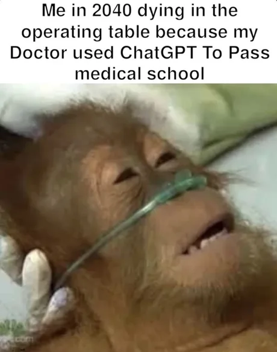

Kuidas vestelda tehisaruga?
Sören Pruul
25.11.2024
Geniaalne
haugi mäluga
uus töökaaslane

Geniaalne
haugi mäluga
uus töökaaslane
- Pole tegelikult 'intelligentne', ei 'mõista'
- Treenitud tohutul hulgal interneti andmetel
- Ennustab järgmist sõna
- Imiteerib inimintelligentsi, 'petab' meid hästi ära
Keelemudel (LLM)

-
Kratt
- Teeb paljud automaatsed aeganõudvad korduvad tüütud ülesanded ära
- Tekitab probleeme kui tähelepanuta jätta

- 24/7 ligipääs infole ja seletustele
- Ülimalt suur arvutusvõimsus
- Personaliseeritud, rätseplahendus just sulle
Omadused
- Mustandite genereerimine
- 'Kuivade' dokumentide kokkuvõte
- Aitab mõtlemist lihvida - pakub alternatiive ja vastuargumente
- Lahendus 'tühja lehe' probleemile
- Uute teemade õppimine
Võimalused
...
Kuidas uusi asju õppida?

Uus teema = tundmatu paik

Õppimine = tundmatu paiga avastamine ja kaardistamine
Keelemudel tutvustab meile ümbrust ja aitab kaardistada
Parimad praktikad
Ole detailne ja spetsiifiline


few-shot prompting


chain of thought


Limitatsioonid ja ohukohad
- Pole tegelikult 'intelligentne', ei 'mõista'
- Treenitud tohutul hulgal interneti andmetel
- Ennustab järgmist sõna
- Imiteerib inimintelligentsi, 'petab' meid hästi ära
Keelemudel (LLM)
- Pole tegelikult 'intelligentne', ei 'mõista'
- Treenitud tohutul hulgal interneti andmetel
- Ennustab järgmist sõna
- Imiteerib inimintelligentsi, 'petab' meid hästi ära
Keelemudel (LLM)
Hallutsinatsioonid, ebausaldusväärne info
Vale informatsioon
Ebatäpne sõnastus
Ekspertiis + juhiste selgus
Valideerimine
Edasitöötlemine